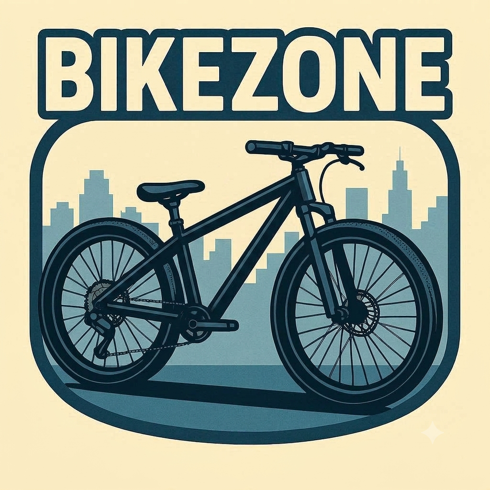

Meu primeiro post
Por: Vitor Fontes Landin
Boas-vindas ao meu novo blog! Aqui vou compartilhar meus conhecimentos sobre o mundo das bikes.
Vou compartilhar conhecimentos sobre peças de bikes e bikes

Por: Vitor Fontes Landin
Boas-vindas ao meu novo blog! Aqui vou compartilhar meus conhecimentos sobre o mundo das bikes.

Rodas: são responsáveis pelo movimento da bicicleta e ajudam a manter o equilíbrio durante o pedal.
Câmbio: permite trocar as marchas da bicicleta, deixando a pedalada mais fácil ou mais pesada.
Corrente: transmite a força dos pedais para a roda traseira, fazendo a bicicleta se movimentar.
Freios: servem para diminuir a velocidade e parar a bicicleta com segurança.
Selim: é o banco onde o ciclista se senta durante o passeio.
Guidão: ajuda o ciclista a controlar a direção da bicicleta.
Quadro: é a estrutura principal da bicicleta e conecta várias de suas peças.
Pedais: recebem a força dos pés e ajudam a movimentar a corrente e as rodas.
Todas essas peças trabalham juntas. Por isso, cuidar e fazer a manutenção da bicicleta é importante para ter um pedal mais seguro e tranquilo.
Por que fazer a manutenção na minha bike?
Fazer a manutenção da bicicleta é importante para mantê-la segura e funcionando corretamente. Verificar os freios, pneus, corrente, marchas e outras peças ajuda a evitar problemas durante o passeio. Além disso, a manutenção aumenta a durabilidade das peças, melhora o desempenho da bicicleta e pode evitar gastos maiores com consertos. Por isso, cuidar da sua bike regularmente é essencial para pedalar com mais segurança e tranquilidade.
Conselhos para um bom funcionamento dos freios da sua bike
Os freios são fundamentais para garantir segurança durante o pedal. Por isso, é importante verificar regularmente se as pastilhas ou sapatas não estão muito gastas e se o sistema está funcionando corretamente. Também fique atento a sinais como barulhos diferentes, dificuldade para frear ou manetes muito moles. Esses sinais podem indicar que está na hora de fazer uma manutenção.